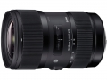

器材库 > APS画幅镜头 > DC 18-35/1.8 HSM

详细规格
镜头类型
标准变焦镜头
发布日期
2013-04-18
焦距
18mm-35mm
等效35mm画幅焦距
27mm-52.5mm
最大光圈
f/1.8
最小光圈
f/16
视角（对角）
76.5° - 44.2°
镜头结构
17片/12组
非球面镜片
4片
低/超低色散镜片
5片
光圈叶片
9片
最近对焦距离
28cm
最大放大倍率
0.23倍
驱动马达
HSM（超声波马达）
滤镜口径
72mm
镜头卡口
Canon EF, Nikon AF, Sigma SA
防抖
否
颜色
黑色
尺寸
78×121mm
重量
810g
附件
花瓣型遮光罩LH780-06
备注
支持USB连接槽
bbbb22102014-06-18 10:594.83 分
操作性 4.50耐用性 4.50性价比 5.00解像力 5.00色彩还原 5.00机械结构 5.00
akuncc12202014-06-06 15:004.67 分
操作性 5.00耐用性 4.50性价比 4.50解像力 4.50色彩还原 4.50机械结构 5.00
黄兰2014-05-18 10:38
jeshe2013-12-27 13:054.83 分
操作性 4.50耐用性 5.00性价比 5.00解像力 5.00色彩还原 4.50机械结构 5.00
我是阿弯2013-12-06 11:254.58 分
操作性 5.00耐用性 4.50性价比 4.00解像力 4.50色彩还原 4.50机械结构 5.00
pzljun2013-10-12 22:044.33 分
操作性 4.50耐用性 4.00性价比 4.00解像力 4.50色彩还原 4.50机械结构 4.50
冠头领2013-08-26 20:124.42 分
操作性 4.50耐用性 4.50性价比 4.50解像力 4.50色彩还原 4.00机械结构 4.50
一泓禅师2013-07-05 23:274.5 分
操作性 4.50耐用性 4.50性价比 4.50解像力 4.50色彩还原 4.50机械结构 4.50
yandebin9182013-06-25 15:545 分
操作性 5.00耐用性 5.00性价比 5.00解像力 5.00色彩还原 5.00机械结构 5.00
hzwsy19912013-06-15 17:290.5 分
操作性 0.50耐用性 0.50性价比 0.50解像力 0.50色彩还原 0.50机械结构 0.50
fphonix2013-05-23 10:193.92 分
操作性 4.00耐用性 4.50性价比 3.00解像力 4.00色彩还原 3.50机械结构 4.50
与时2013-05-06 07:515 分
操作性 5.00耐用性 5.00性价比 5.00解像力 5.00色彩还原 5.00机械结构 5.00
ys10142013-04-28 13:514.5 分
操作性 5.00耐用性 5.00性价比 4.00解像力 4.50色彩还原 4.00机械结构 4.50
蝉书风雅2013-04-27 03:535 分
操作性 5.00耐用性 5.00性价比 5.00解像力 5.00色彩还原 5.00机械结构 5.00
teslaroadster2013-04-21 16:435 分
操作性 5.00耐用性 5.00性价比 5.00解像力 5.00色彩还原 5.00机械结构 5.00
coldlarry2013-04-21 15:23
产品图 / 样片
评测 / 相关文章
- 惊喜不断 适马18-35/1.8评测 （存档）
- ［试用］适马DC 18-35/1.8 HSM开箱试机 （存档）
- ［试用］海外评测：适马 DC 18-35/1.8 HSM （存档）
- ［试用］适马18-35/1.8 DC HSM镜头初印象 （存档）
- ［资讯］适马18-35/1.8 DC HSM镜头图赏 （存档）